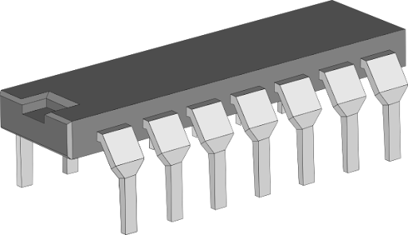

หน้าหลัก
ติดต่อเรา
IC Center

สินค้าของเรา
IC ที่ใช้ในรายวิชา FUNDAMENTAL OF DIGITAL DEVICES AND CIRCUITS
IC 7400 NAND Gate มี 4 วงจร แต่ละวงจรมีอินพุต 2 ขา
ดาวน์โหลด Datasheet
IC 7402 NOR Gate มี 4 วงจร แต่ละวงจรมีอินพุต 2 ขา
ดาวน์โหลด Datasheet
IC 7404 NOT Gate หรือ Inverter มี 6 วงจร
ดาวน์โหลด Datasheet
IC 7408 AND Gate มี 4 วงจร แต่ละวงจรมีอินพุต 2 ขา
ดาวน์โหลด Datasheet
IC 7432 OR Gate มี 4 วงจร แต่ละวงจรมีอินพุต 2 ขา
ดาวน์โหลด Datasheet
IC 7486 NOR Gate มี 4 วงจร แต่ละวงจรมีอินพุต 2 ขา
ดาวน์โหลด Datasheet
กลับ